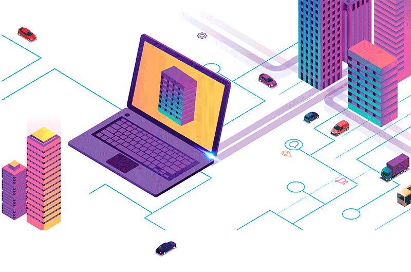
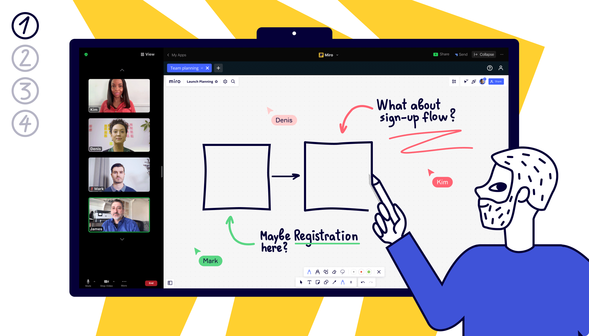

Conectando el Futuro: Teletrabajo, Telemedicina y Teleeducación en un Mundo Digital
Mundo Digital
El término "mundo digital" se refiere al entorno en el que las actividades, procesos y datos se gestionan y manipulan utilizando tecnología digital, como computadoras y dispositivos electrónicos. Este término abarca una amplia gama de aspectos de la vida moderna que están intrínsecamente vinculados a la tecnología digital. Aquí hay algunas dimensiones clave del mundo digital, donde observamos cómo el teletrabajo, la telemedicina y la teleeducación convergen para crear un mundo más conectado. Estas tendencias no solo reflejan cambios en la forma en que vivimos, trabajamos y aprendemos, sino que también anticipan un futuro donde la tecnología digital sigue siendo el hilo conductor que conecta nuestras experiencias cotidianas.
- Teletrabajo
- Telemedicina
- Teleeducación
Teletrabajo
El teletrabajo ha evolucionado de ser una alternativa a la oficina a convertirse
en un pilar fundamental de la forma en que concebimos el trabajo.
Con la capacidad de conectarse a través de plataformas digitales,
los profesionales pueden colaborar de manera efectiva desde
cualquier parte del mundo. Analizamos cómo esta tendencia no
solo proporciona flexibilidad a los empleados, sino que
también reconfigura la dinámica laboral y redefine la relación
entre el espacio físico y la productividad.
En la era actual, el teletrabajo ha emergido como una forma transformadora de llevar
a cabo nuestras responsabilidades laborales. Descubre cómo el teletrabajo
no solo brinda flexibilidad a los empleados, sino que también puede aumentar
la eficiencia y la satisfacción laboral. Exploraremos las herramientas esenciales,
las mejores prácticas y cómo crear un entorno de trabajo remoto productivo.
Aquí hay algunos aspectos clave sobre el teletrabajo:
-
Tecnología Facilitadora:
La conectividad digital es esencial para el teletrabajo. Herramientas como el correo electrónico, plataformas de videoconferencia, mensajería instantánea y sistemas de gestión de proyectos permiten a los empleados comunicarse y colaborar sin estar físicamente presentes en la misma ubicación.

-
Flexibilidad Horaria y Geográfica:
El teletrabajo proporciona a los empleados una mayor flexibilidad en términos de horarios laborales y ubicación. Pueden ajustar su jornada laboral para adaptarse a su estilo de vida y trabajar desde cualquier lugar con acceso a internet.
-
Beneficios para Empleados:
Los beneficios del teletrabajo incluyen la reducción del tiempo y el costo de los desplazamientos, mayor autonomía en la gestión del tiempo, mejor equilibrio entre el trabajo y la vida personal, y la posibilidad de personalizar el entorno de trabajo.
-
Desafíos del Teletrabajo:
A pesar de sus beneficios, el teletrabajo también presenta desafíos. La falta de interacción cara a cara puede afectar la comunicación y la colaboración. Además, algunos empleados pueden enfrentar dificultades para desconectar del trabajo debido a la falta de límites claros entre la vida laboral y personal.

-
Requisitos de Infraestructura:
Para que el teletrabajo sea efectivo, es esencial contar con una infraestructura tecnológica adecuada, que incluya una conexión a internet confiable, dispositivos actualizados y herramientas de colaboración eficientes.
 -
Adopción Acelerada:
La pandemia de COVID-19 aceleró la adopción del teletrabajo a nivel mundial, ya que muchas empresas tuvieron que implementar políticas de trabajo remoto para garantizar la seguridad de los empleados. Esto llevó a una mayor aceptación de esta modalidad y a la implementación de estrategias más permanentes de trabajo flexible.
-
Cambio en la Cultura Empresarial:
El teletrabajo ha llevado a un cambio en la cultura empresarial, fomentando un enfoque más orientado a resultados en lugar de basarse en la presencia física en la oficina. Las empresas están reconsiderando sus políticas y adoptando modelos híbridos que combinan trabajo presencial y remoto.
Telemedicina
La telemedicina irrumpe en la atención médica
convencional, permitiendo consultas virtuales
y monitoreo remoto. Las distancias se acortan,
y la atención médica se vuelve más accesible.
Este cambio no solo transforma cómo buscamos
atención, sino que también redefine la relación
entre pacientes y profesionales de la salud.
Esta modalidad ha experimentado un crecimiento
significativo, especialmente con los avances
tecnológicos y la necesidad de soluciones de
atención médica más accesibles y eficientes.
Aquí tienes algunos puntos clave sobre la
telemedicina:
-
Consultas Virtuales:
La telemedicina permite a los pacientes tener consultas virtuales con profesionales de la salud. Esto se puede realizar a través de videoconferencias, llamadas telefónicas o plataformas en línea e specializadas.

-
Acceso Remoto a Servicios de Atención Médica:
Con la telemedicina, los pacientes pueden acceder a servicios médicos desde la comodidad de sus hogares. Esto es especialmente valioso para personas que viven en áreas remotas o que tienen dificultades para desplazarse.

-
Diagnóstico y Monitoreo a Distancia:
Los profesionales de la salud pueden realizar diagnósticos y monitorear la salud de los pacientes a través de la transmisión de datos médicos, imágenes y resultados de pruebas a distancia.

-
Asesoramiento y Seguimiento Continuo:
La telemedicina facilita el asesoramiento médico continuo y el seguimiento de enfermedades crónicas. Los pacientes pueden recibir orientación regular sin la necesidad de desplazarse físicamente a una clínica.

-
Plataformas Especializadas:
Existen plataformas y aplicaciones dedicadas a la telemedicina que proporcionan un entorno seguro para la comunicación entre médicos y pacientes. Estas plataformas pueden incluir características como historias clínicas electrónicas, recordatorios de citas y servicios de farmacia en línea.

-
Emergencias y Atención Urgente:
La telemedicina también se utiliza en situaciones de emergencia y atención urgente. Los servicios de telemedicina pueden proporcionar evaluaciones rápidas y coordinar la atención adecuada en momentos críticos.

-
Regulación y Normativas:
La telemedicina está sujeta a regulaciones y normativas específicas que varían según el país y la región. Las leyes y prácticas profesionales se están adaptando para abordar los desafíos y oportunidades asociados con la atención médica a distancia.
-
Aceptación Acelerada:
La pandemia de COVID-19 aceleró la adopción de la telemedicina, ya que las medidas de distanciamiento social y las restricciones de movimiento llevaron a un aumento en la demanda de servicios de atención médica virtual.
Teleeducación
La educación también se ha sumergido en la era digital,
transformando las aulas tradicionales en experiencias
de aprendizaje en línea. Investigamos cómo las plataformas
educativas digitales, las aulas virtuales interactivas y
los recursos multimedia están democratizando la educación.
En este entorno, la teleeducación no solo ofrece flexibilidad
en el aprendizaje, sino que también abre nuevas puertas para
la adquisición de conocimientos en todo el mundo.
La teleeducación, también conocida como educación en línea o
educación a distancia, se refiere al proceso de impartir y
recibir educación utilizando tecnologías de la información y
la comunicación (TIC) para superar las barreras geográficas y
permitir el aprendizaje remoto. Aquí te dejo algunos aspectos
clave sobre la teleeducación:
-
Plataformas en Línea:
La teleeducación se apoya en plataformas en línea que ofrecen cursos, contenido educativo y herramientas de interacción. Estas plataformas pueden variar desde aulas virtuales de instituciones educativas hasta plataformas masivas en línea abiertas (MOOCs) que permiten el acceso a cursos de diversas instituciones.
-
Variedad de Contenidos:
La teleeducación abarca una amplia variedad de contenidos, desde cursos académicos tradicionales hasta programas de formación profesional y cursos de desarrollo personal. Puedes encontrar opciones en diversas áreas, como matemáticas, ciencias, humanidades, programación, idiomas, entre otros.
-
Flexibilidad de Horarios:
Una de las principales ventajas de la teleeducación es la flexibilidad de horarios. Los estudiantes pueden acceder a materiales y participar en actividades de aprendizaje en momentos que se adapten a sus horarios, lo que facilita el aprendizaje para aquellos con compromisos laborales o personales.
-
Acceso Global:
La teleeducación permite el acceso global a la educación. Estudiantes de todo el mundo pueden inscribirse en cursos ofrecidos por instituciones de renombre sin tener que desplazarse físicamente a un campus.
-
Interactividad y Colaboración:
A pesar de la distancia física, las plataformas de teleeducación suelen incluir herramientas para la interactividad y la colaboración. Esto puede incluir foros de discusión, sesiones de videoconferencia en tiempo real, proyectos colaborativos y más.
 -
Evaluación y Retroalimentación:
Los métodos de evaluación en la teleeducación varían, pero suelen incluir pruebas en línea, tareas, proyectos y discusiones. Los estudiantes también reciben retroalimentación de los instructores para mejorar su comprensión y desempeño.
-
Desarrollo de Habilidades Tecnológicas:
La teleeducación fomenta el desarrollo de habilidades tecnológicas, ya que los estudiantes interactúan con plataformas en línea, herramientas de colaboración digital y recursos multimedia.
-
Adopción Acelerada:
Similar a la telemedicina, la pandemia de COVID-19 aceleró la adopción de la teleeducación a nivel mundial. Las instituciones educativas implementaron rápidamente soluciones en línea para garantizar la continuidad educativa durante los períodos de cierre.
-
Retos:
Aunque la teleeducación tiene beneficios, también presenta desafíos, como la necesidad de una conexión a internet confiable, la adaptación de los métodos de enseñanza y aprendizaje, y la gestión de la motivación y el compromiso de los estudiantes a distancia.